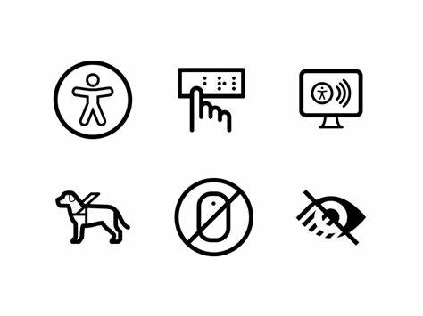
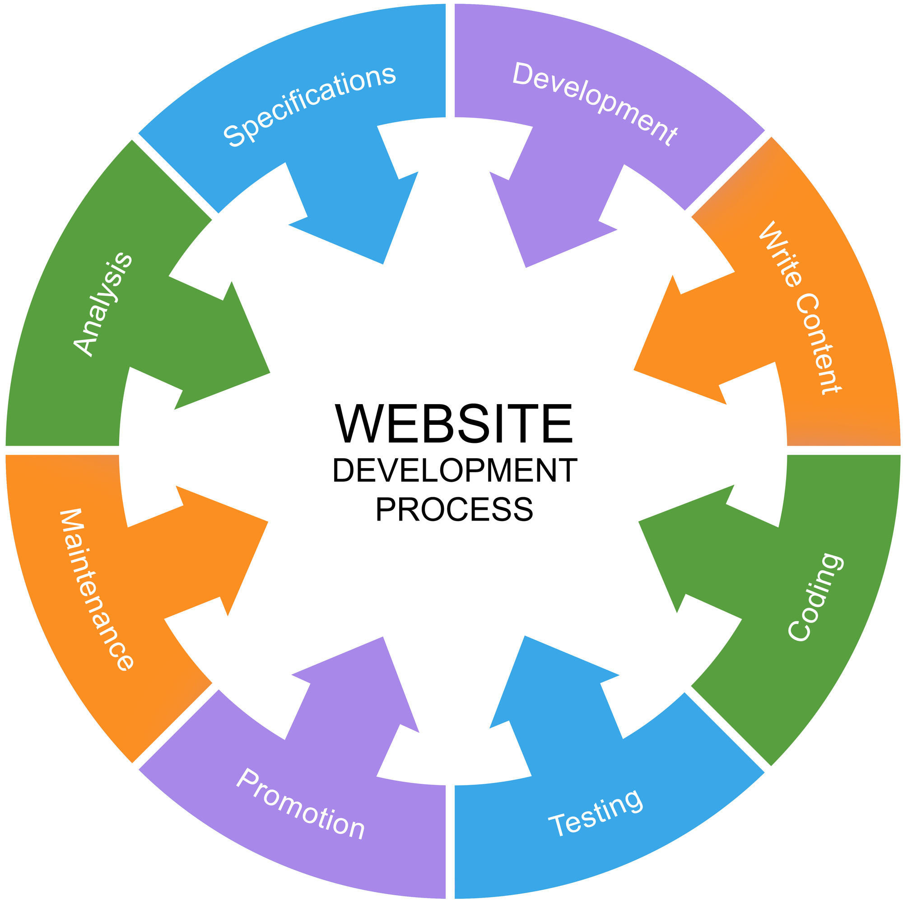

Web accesibility makes sure that websites and technology are designed so that people can use them with ease. More specically, people can perceive, understand, navigate, and interact with the Web, and contribute to the Web as they please. Web accessibility even encompasses individuals with disabillites that affect there access to the Web, including auditory, cognitive, neurological, physical, speech, and visual disabillites.
Ensuring web accessibility brings numerous benefits to individuals, businesses, and society. It helps create a more inclusive web environment where everyone has equal access to information. Web developers can make sure taht their content is accessible to a wider audience, improving the user experience for everyone.
 | Accessibility Tool | Purpose |
|---|---|
| Screen Reader | Reads out the content of a webpage to visually impaired users |
| Color Contrast Analyzer | Ensures text is readable for users with visual impairments |
| Keyboard Navigation | Allows users to navigate through a website using the keyboard only |
For more information on web accessibility, visit these resources: